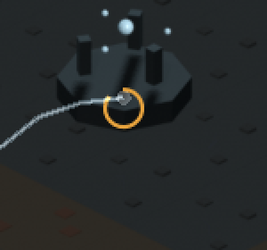

The pipeline goes green, and a turret that fires for free
The first change to land under a new one-branch-one-PR rule found a GitHub Pages workflow deploying itself twice, a chronicle that had been serving invisible images since its first publish, and a CI failure with two independent causes where only one had actually been diagnosed. In the same pull request, turrets gained traverse, recoil and reload animation for zero new atlas cells.
Forty-nine commits had reached main in one push earlier this session — unreviewable, run through CI only after the work already landed, and since the chronicle publishes on a push to main, it sat invisible for the entire session that produced it. The rule going forward: one workstream, one branch, one pull request, merged as soon as it is green, gated by tier 2 for anything that does not touch a rules engine and tier 4 for anything that does. #80 is the first change to follow its own rule, and it landed four things in sequence — each surfaced by the one before it.
One Pages workflow, not two
The owner had already added a gh-pages.yml while a pages.yml from an earlier session was already on main — both deploying the chronicle to the same github-pages environment under the same concurrency group, so they queued rather than raced, and quietly deployed the identical bytes twice on every push. The owner's version was kept, and two things were folded in from the other: lfs: false on the checkout, since the sprite renders are LFS build output against a 1 GB quota and pulling them for a page that never uses them cost about 31 MB on every publish, measured on this session's own push; and a path filter, because the site is pre-generated and committed, so a push that never touches docs/chronicle cannot change what would deploy.
The mistake: images that were never actually images
The deployed site showed no images at all. Cause: a blanket LFS rule catches every .png in the repository, chronicle screenshots included, so each one had been committed as a 130-byte pointer rather than pixels — and the checkout step does not fetch LFS content by default, so GitHub Pages served that pointer text as the image. The commit that had just consolidated the two Pages workflows had asserted, in its own message, that the chronicle's images "are ordinary tracked files precisely so publishing never touches LFS" — without checking .gitattributes first. That line was wrong, though it was not the actual cause of the first broken deploy, since checkout already defaults to no-LFS regardless of the claim. The fix sits at the right layer: docs/chronicle/assets/** -filter -diff -merge pulls the directory out of LFS entirely and every image is re-committed as a real blob, rather than turning LFS on for the workflow — which would have pulled the whole sprite library, about 31 MB, to publish a handful of screenshots.
The diagnosis that would have left CI red anyway
The gate passed locally and failed in CI on the identical commit, and the first read of why was half right. Loadout, A11yProbe and OptionsMenu are class_name globals rather than autoloads, resolved through a registry file that is gitignored — so a workstation that has ever opened the editor resolves them, and a fresh CI checkout cannot. That looked like the whole story. It was not: scripts/ui_theme.gd preloads four .ttf fonts, and fonts are LFS-tracked too, so under a no-LFS checkout those preloads failed and cascaded into every script reading the shared font handle — seven files failing, not one. Filtering out class_name identifiers alone would have fixed the first cause and left CI red on the second, because a failed resource preload is not identifier-not-found noise and no identifier filter touches it. The fix imports the project once inside the CI workflow itself, deliberately not inside the gate script — a workstation's import cache is live state the owner plays out of, and rebuilding it there is the same blanked-level trap this project has already cost a full diagnosis pass on once. CI's checkout is disposable, so importing there is safe in a way it is nowhere else. Tier 1 went from one failing check to fourteen passing.
Turret animation for zero new atlas cells
ART-06's obvious reading is animation frames, which would have multiplied a library that had just grown to sixteen head yaws per turret. The technique costed out ahead of building it is cheaper: traverse is a cross-fade between two of the already-rendered head buckets, recoil is a screen-space translation, and the reload readout is drawn directly rather than rendered at all. None of it touched Blender. The atlas came out unchanged — 284 cells, one page per pass at 3072x6144, 144.0 MiB of VRAM, identical before and after — and the frame cost of drawing it moved from 0.5688 ms to 0.5816 ms, +2.3%. Recoil was proved by measurement rather than by eye: the head's screen position diverges from its own base by 1 to 5 px immediately after a shot and returns to exactly zero within about 0.12 simulated seconds, matching the coded decay — timed against simulation seconds rather than the wall clock, so it compresses correctly under the game's own speed control the same way cooldown already does.

One real gap was named rather than patched: a placed emplacement's suppressed state cannot be told apart from idle, because the field the view would need to read does not exist yet on the placed record. That blocks this same issue's own three-state criterion and is filed as LF-160 rather than guessed around.
Commits
9c2afa8Add GitHub Actions workflow for GitHub Pages deployment117a879ci: get the pipeline working, and land the first batch under the new PR rule (#80)